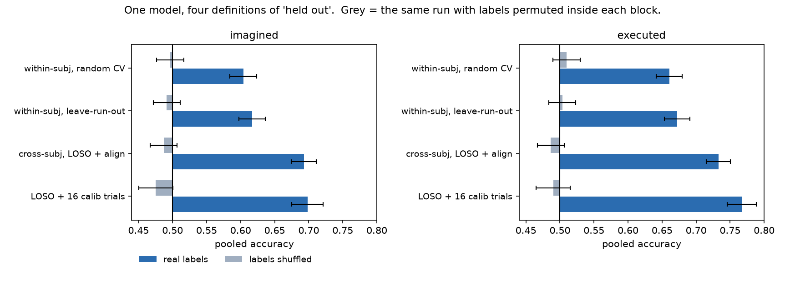
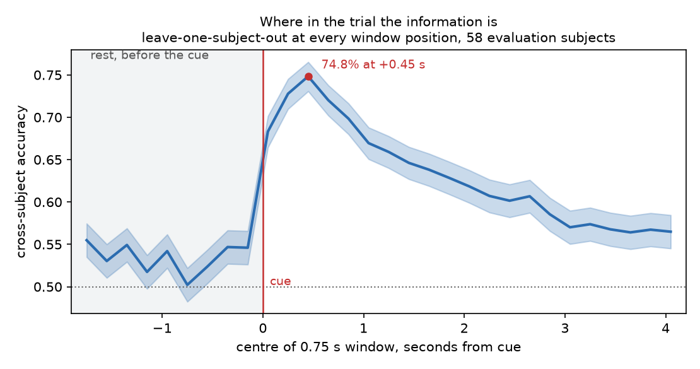

Imagined movement, 64-channel scalp EEG. PhysioNet EEGMMIDB, 109 subjects, 105 usable, about 43 trials each.
Cross-subject beats within-subject, which is backwards, and explaining why is where this starts. Everything after slide three is an attempt to find a reason the 69.3% might not mean what it says.
| group | n | what it is for |
|---|---|---|
| HOLDOUT | 12 | Nothing. Not selection, not reporting, not the shipped model's training set. Opened once, at the end, by the prediction script. |
| DEV | 35 | Held-out folds for choosing features, classifier, band, window, regularisation. |
| EVAL | 58 | Held-out folds for every reported number. Never consulted while choosing. |
Training sets always contain every other non-holdout subject, so DEV and EVAL folds see the same amount of data. Only the test folds differ.
About fifty configurations were compared against DEV. A DEV estimate carries a confidence interval of roughly ±2.4 points, so the winner is optimistic on DEV. That is precisely why the reported figures come from EVAL, and why the CSP component count was picked by a one-standard-error rule rather than by taking the maximum.

The ladder runs backwards. Holding out an entire person is easier than holding out nine of that person's own trials.
Each subject has about 43 trials, so a within-subject fold trains on 34 and a leave-one-run-out fold on 28. A cross-subject fold trains on 3,900. Twenty-eight trials cannot estimate two 64-channel class covariances; 3,900 trials from other people can.
The folklore that within-subject cross-validation is inflated is a statement about leakage. Here leakage loses to sample size.

Accuracy climbs from 55% to 74.8% in 600 ms, peaks 450 ms after the cue, then decays monotonically for the rest of the trial.
I read that shape as a stimulus-evoked response, because a sharp peak that decays is not what a sustained rhythm looks like — and this protocol puts the cue on the left or right of the screen.
That reading turned out to be wrong. The next slide is the control that killed it.
"A visual target appeared on either the left or right side of the screen" … the subject acts "until the target disappeared".
PhysioNet EEGMMIDB protocol, runs 3/4/7/8/11/12Screen position is perfectly confounded with the class label, and the target is visible for the whole trial. A lateralised stimulus produces lateralised occipital activity. A classifier is free to read the screen instead of the motor cortex.
A real BCI has no target telling it which hand the user is thinking about. If it did, it would not need EEG.
The control: split both windows by electrode region. If the early advantage is visual it belongs to the back of the head, and only early.
| window | all 64 | sensorimotor | parieto-occip. |
|---|---|---|---|
| 0.0 – 2.0 s | 71.0% | 67.6% | 59.6% |
| 0.5 – 3.5 s | 69.3% | 66.1% | 59.8% |
It does neither. Parieto-occipital sites give the same number at every window position — volume conduction, and P3/P4 sit near the hand areas. What changes with the window is the sensorimotor strip.
The early peak is the fast first phase of desynchronisation after a movement cue. The confound is real and undismissable by design; it is not the driver.
| control | accuracy |
|---|---|
| Rest before the cue → upcoming label | 55.6% |
| Task window → previous trial's label | 61.0% |
Read naively: the pipeline leaks, and trials are not independent. Either would sink the headline.
Consecutive trials in a run carry different labels 76.8% of the time. Lag-1 correlation −0.54, p ≈ 10⁻²⁴⁵. BCI2000's target sequence strongly alternates, and I had assumed it was random.
The carry-over control. A decoder right about the current label a fraction a of the time is automatically right about the previous label a·q + (1−a)(1−q) of the time, with q = 0.768. At a = 0.693 that is 60.4%. Observed: 61.0%. Nothing left to explain.
The pre-cue control. Split trials by whether the label repeated. The model learned "predict the opposite of the previous trial", so it is right on alternations and wrong on repeats, mirrored about chance.
| pre-cue rest predicts… | accuracy |
|---|---|
| the previous trial's label | 63.7% |
| the current label, on alternations | 60.7% |
| the current label, on repeats | 40.3% |
No information about the current trial at all.
| electrodes only | cross-subject |
|---|---|
| all 64 | 69.3% |
| sensorimotor strip (15) | 66.1% |
| C3, Cz, C4 (3) | 63.0% |
| parieto-occipital (17) | 59.8% |
| frontal (17) | 56.1% |
Three electrodes over the hand area get within six points of all 64. Frontal sites, where eye and muscle artefact would dominate, are the weakest.
| subject identity in the same features | 93-way |
|---|---|
| motor-imagery trials, no alignment | 97.9% |
| eyes-open rest, nobody doing anything | 98.8% |
| after alignment | 1.6% |
| chance | 1.1% |
The alignment step whitens each recording by its own mean spatial covariance. It removes essentially all subject identity and raises cross-subject accuracy by 5.2 points. That is measured, not assumed.
CSP normally estimates each class's covariance from concatenated raw trials. In leave-one-subject-out that is a 64 × 1.9-million-sample covariance, twice, in every one of 58 folds. It used 4 GB per worker, took 150 s per configuration, and drove a 24 GB laptop into 40 GB of swap.
An epoch's covariance does not depend on which fold the epoch is in. Computing it once and solving the same eigenvalue problem in the covariance domain agrees with MNE's implementation to within 0.7 points, against a ±2.4-point interval.
The alternative was to keep MNE's CSP and run fewer controls. That is the wrong trade: the controls are the part worth reading, and the speedup is what made the placebo windows, electrode lesions, carry-over test, alignment-scope comparison and cross-paradigm transfer affordable rather than a choice of two.
General form: separate the features that depend on the training fold from the ones that do not. CSP filters do. Covariance matrices do not.
The alignment sees the test subject's unlabelled data. Estimating it from their first run only instead of all three costs 0.96 points (68.7% against 69.6%). Smaller than I feared, and the honest deployment number.
One session per subject. Every cross-subject result here is also cross-session and the two cannot be separated. The question a real BCI faces is whether a model still works on the same person next week, and this dataset cannot answer it.
43 trials per person. A single subject's accuracy carries a standard error of 7.6 points, so per-person claims are weak even where group claims are solid.
Next, with more compute. One network across all subjects with a small per-subject adapter: the shared part learns the task, the adapter absorbs the person. That is the structure this analysis found — one large nuisance factor that is identity, one small factor that is the task.
Next, without. Decode the same contrast from a dataset whose cue is not lateralised, and see whether the 60% survives.
Claude wrote the scaffolding, the plots and the covariance-domain CSP. The judgement calls were quarantining twelve subjects before touching anything, using the pre-cue rest as a placebo, and catching that "alignment helps CSP and hurts Riemannian models" was an artefact of comparing a tuned model against an untuned one.